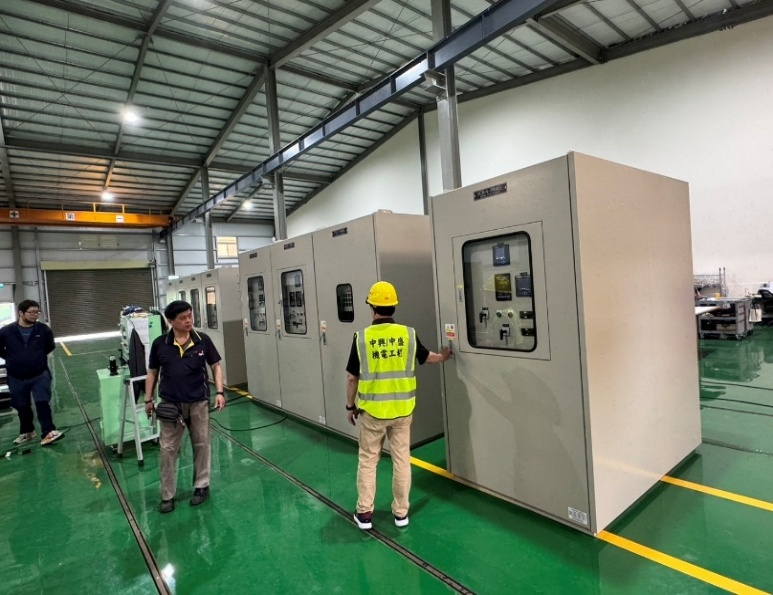
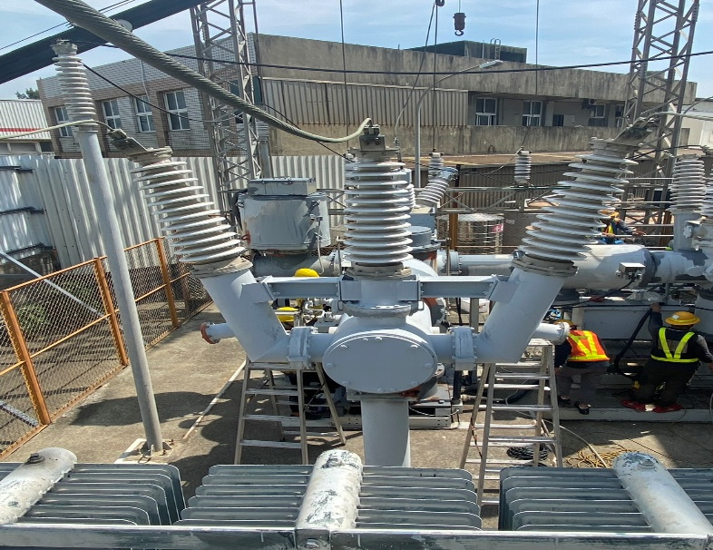
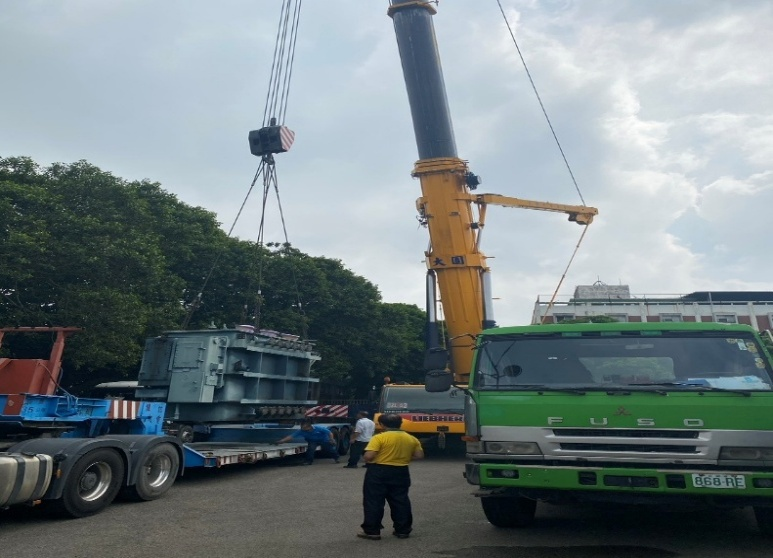
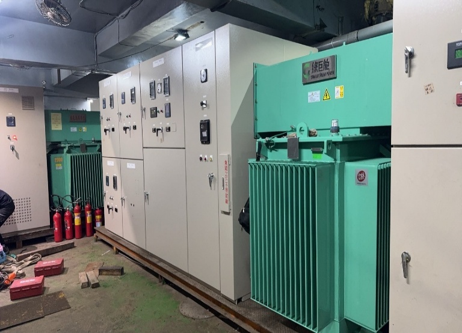

⚡
高低壓配電盤設計組裝
依現場需求設計與組裝高壓、低壓配電盤盤體，確保用電安全與配電效率。
ABOUT US
中盛工程有限公司專注於電力與機電工程領域，業務涵蓋高低壓配電盤的設計與組裝、 變電站建置、變壓器與 GIS（氣體絕緣開關設備）的檢修更換，以及高壓電纜施工與機電系統工程。
我們深知供電穩定對工廠營運的重要性，秉持「專業．品質．信賴」的理念， 從規劃設計、設備組裝到現場施工與測試，皆以嚴謹的標準執行， 已協助永豐餘紙業、新光紡織、台電、虹堡科技、錦美紙業、石門水庫自來水公司等 多家企業與單位完成關鍵電力工程。
COMPANY HISTORY
於民國六十九年，有一群電機專業人士，基於共同的經營理念，及服務社會的精神，遂共同集資成立冠群機電股份有限公司及中興機電顧問股份有限公司。
十幾年來本公司秉持著專業、迅速的原則及良好的服務精神，和所有的客戶互相扶持、共同成長，一起為事業而努力。民國八十一年羅文洲先生接掌公司經營權，擔任負責人，積極擴展公司業務，使公司業務蒸蒸日上，同時積極延攬人才及培訓專業人才，使得技術能力得以提升。
有句名言「工欲善其事，必先利其器」，因此除了有優秀的人才外，亦必須有設備來輔助，使工作得以順利進行；有鑑於此本公司購置先進之設備，以不斷求新求變之精神，追求新知，同時在與客戶互動過程中，累積豐富的經驗及良好的信譽，使得我們的業績穩健地成長。
我們的努力及付出，受到社會的肯定，本公司於八十六年，在中華民國建築業跨世紀十大傑出金鼎獎選拔會中，遴選為十大傑出工程公司，其代表之工程為：
OUR SERVICES
從配電盤製造、變電站建置到機電工程，提供完整的電力工程服務。
依現場需求設計與組裝高壓、低壓配電盤盤體，確保用電安全與配電效率。
高壓變電站規劃與建置，從設備配置到組裝測試，建立穩定的供電核心。
大型變壓器（含 15000KVA 等級）之更換與安裝，恢復並提升供電容量。
69KV GIS、ABS 等高壓開關設備之檢修、組裝與維護，確保保護動作正常。
台電進線、高壓電纜佈設與端接施工，符合電業法規與安全標準。
空調主機、冷凍機組配管安裝，以及消防設備配線與系統整合，確保廠區安全運作。
WHY CHOOSE US
具備 69KV 高壓配電盤、變電站、GIS 與大型變壓器等工程能量。
承攬永豐餘、新光紡織、台電、虹堡科技等重點客戶工程，品質受信賴。
設計、製造、施工到測試單一窗口完成，整合效率高、責任清楚。
落實安全衛生講習與標準作業流程，守護工地與供電安全。
OUR PROJECTS
部分代表性工程案例，涵蓋配電盤、變電站、變壓器與機電施工。










CONTACT US
歡迎洽詢配電盤製造、變電站、變壓器與機電工程需求。